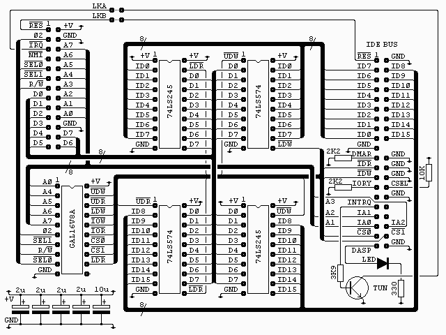
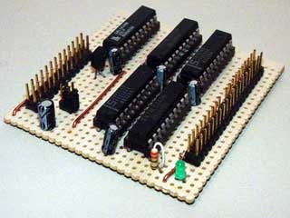
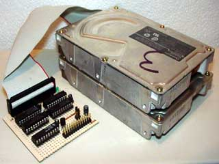
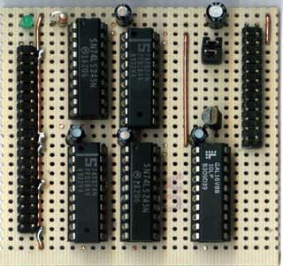
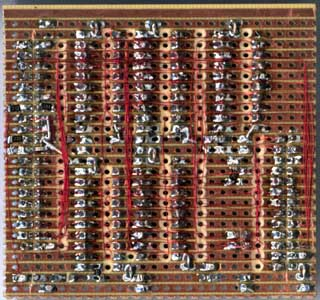

|
|
IDE bus interface circuit By Lee Davison. |
|

The connector on the top left of the diagram is from my own 6502 boards (see sbc project) and is as it is for two reasons. It's easy to wire on a stripboard layout and I have a lot of 26 way ribbon, headers and plugs. All the signals are directly from the 6502 except /SEL0 and /SEL1 which are used to select the block $F1xx with /SEL0 = 1 and /SEL1 = 0.
A 40 pin IDC header, re-cycled from a PC motherboard, is used to connect to the IDE bus.
All the capacitors are low ESR electrolytics and are placed one near each chip. If you don't have this type to hand you can use standard electrolytics with some low value ceramic capacitor, say 0.1uF, in parallel.
The GAL16V8A is used to generate the read and write strobes for the buffers and latches and to generate the IOR and IOW strobes for the IDE bus. All are active low. The interface uses 32 bytes in the address range as it is a 16 bit port with 16 addresses. For anyone interested the equations for this chip are in ide_01.pld and can be compiled with WinCUPL. The fuse file, ide_01.jed and the compiler listing, ide_01.txt are also included.
IDE ATA Interface address map. High byte at address+1 Address Read Write Width $00 Data 16 Bit $02 Error Precomp 8 Bit $04 Sector count 8 Bit $06 LBA bits 0 to 8 / CHS Sector number 8 Bit $08 LBA bits 8 to 15 / CHS Cylinder low 8 Bit $0A LBA bits 16 to 23 / CHS Cylinder high 8 Bit $0C Drive select & LBA bits 24 to 27 / CHS Head select 8 Bit $0E Status Command 8 Bit $1C Alternate status Device control 8 Bit $1E Drive address Not used 8 Bit For ATAPI devices some of the register names and functions change. Here is the ATAPI map.
IDE ATAPI Interface address map. High byte at address+1 Address Read Write Width $00 Data 16 Bit $02 Error Feature 8 Bit $04 Interrupt reason Not used 8 Bit $06 Not used $08 Byte count low 8 Bit $0A Byte count high 8 Bit $0C Device select 8 Bit $0E Status Command 8 Bit $1C Alternate status Device control 8 Bit $1E Not used All reads and writes to the IDE bus are sixteen bits wide. On write, first the lower eight bits are written to the even address (A0 = 0) and latched by one 74LS574, Then the upper eight bits are written to the corresponding odd address (A0 = 1) and are presented to the upper eight bits of the IDE bus by the 74LS245, a bi-directional buffer used here in the one direction only. These eight bits, along with the previously latched lower eight bits, make up the sixteen bits needed for a write operation.
On read the lower eight bits are read from the IDE bus even address (A0 = 0) via the second 74LS245 and, as this read takes place the upper, eight bits from the IDE bus are latched by the second 74LS574. The upper eight bits can then be read from the 74LS574 latch.The interface is arranged thus so that ..
All 16 bits are used, this allows us to utilise the full capacity of the drive. Reads and writes are symmetrical, i.e. both are done low byte and then high byte. The status registers on ATA devices are all on the low byte, fast polling is possible because only the low byte needs to be read. The disadvantage is that every write must be sixteen bits, even if the top eight bits aren't used.
Other features are ..
An activity LED. Illuminates during ATA device activity. If required this could be wired off board. A reset jumper. This ties the IDE bus reset to the CPU reset so both are reset together. An IRQ jumper. This is to allow an interrupt based driver to be developed.
 
At present only a BASIC demonstration program is available. It can be seen here.
 
| Last page update: 12th September, 2003. | e-mail me
 |